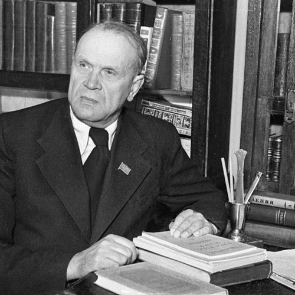

Уклад у развіццё літаратуры

- Крапіва, абапіраючыся на жанравыя набыткі Францішка Багушэвіча, Якуба Коласа, Янкі Купалы, Максіма Багдановіча, Альгерда Абуховіча, Ядвігіна Ш., стаў адным з самых таленавітых распрацоўшчыкаў жанру байкі на беларускім матэрыяле. Адметнасцю яго байкі сталі з’явы і персанажы беларускай рэчаіснасці (Парсюк, Баран, Каршун, Цецярук, Заяц), дэталізацыя і канкрэтызацыя месца, падзеі, вобраза. Сучасныя аўтары, якія працягваюць традыцыі байкапісання, шукаюць новыя формы. Гэта мікрабайкі, байкі цвёрдай формы (напрыклад, у форме санета), байкі, напісаныя традыцыйным страфічным вершам, байкі без маралі і інш.
- Ва ўмовах існавання тэорыі бесканфліктнасці адстойваў каштоўнасць, вартасць драматычных жанраў (артыкул «Канфлікт — аснова п’есы»).
- Несумненным дасягненнем Крапівы сталі творчыя набыткі ў галіне драматургіі (камедыі «Хто смяецца апошнім», «Мілы чалавек», «Брама неўміручасці»).
- Першыя яго вопыты ў прозе былі больш папулярныя, чым у паэзіі. Праз настраёвыя апавяданні, замалёўкі аўтар падышоў да напісання аднаго з самых моцных раманаў той пары — «Мядзведзічы», які пазней падштурхнуў Івана Мележа да напісання «Палескай хронікі».